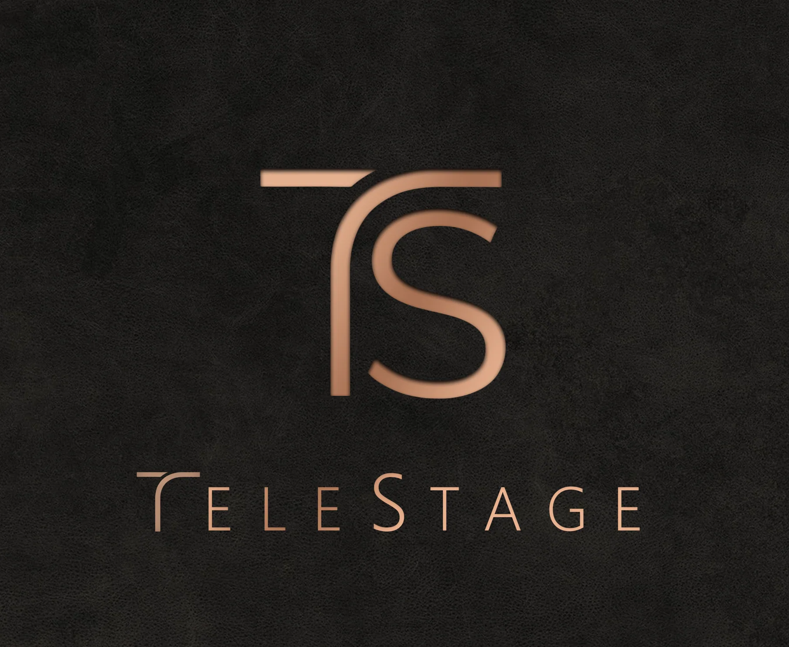

TeleStage
Hybrid Spatial Emulation Audio Engine v1.0.1

TeleStage is a 3D spatial mixer and reverb engine that rethinks how instruments are positioned in a mix.
Most spatial audio plugins only allow you to place a sound source somewhere inside a virtual room. TeleStage takes a different approach: it gives you the ability to place and configure the microphones. Instead of just panning a sound, you are constructing a complete studio recording setup within an unlimited virtual space.
By using a cross-track network, TeleStage brings individual channels from across your DAW onto one shared stage without complex routing or multiple heavy reverb instances. It calculates the exact acoustic geometry between your instruments and your virtual microphones, combining accurate early reflections with a natural reverb tail to capture how your mix actually behaves in a physical room.